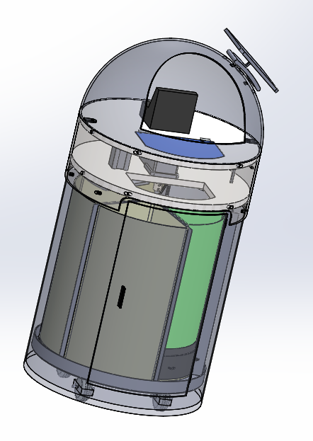

Tri à la source
Réduire les erreurs de tri manuel.
Conception et réalisation d'un système de tri sélectif automatisé

Faites glisser pour faire pivoter le modèle et utilisez les commandes pour zoomer. Vous pouvez également télécharger le modèle STEP.
Smart Bin Pro est une poubelle mécatronique conçue pour identifier et trier automatiquement les déchets dès leur dépôt. Le prototype vise trois catégories : métal, verre et déchets organiques ou papier. Il combine détection, classification optique et orientation motorisée, puis transmet les informations de remplissage pour faciliter la supervision et la collecte.
Une barrière infrarouge détecte l'objet déposé et déclenche le cycle de tri.
Une LED éclaire le déchet et une photorésistance (LDR) mesure la lumière réfléchie. Les valeurs mesurées servent à distinguer le métal, le verre et les déchets organiques ou papier.
L'Arduino commande le servomoteur, qui oriente directement la goulotte vers le compartiment correspondant.
Trois capteurs ultrasoniques estiment le niveau de remplissage des bacs. Les données sont envoyées en Wi-Fi à l'infrastructure de supervision.
Le système comporte une goulotte d'orientation entraînée directement par le servomoteur, sans train d'engrenages. Le rapport étudie le dimensionnement du couple moteur et le choix des matériaux pour les différents éléments de la poubelle.
Coque extérieure rigide et résistante aux chocs.
Bacs intérieurs destinés au stockage des déchets.
Pièce directionnelle fabriquée par impression 3D.
Le contrôle embarqué s'appuie sur une carte Arduino UNO R4 WiFi et un firmware en C++. Le cycle est organisé autour de la détection, de l'acquisition des mesures, de la classification, puis de l'actionnement. Les capteurs ultrasoniques surveillent séparément les trois compartiments.
Une liaison Wi-Fi relie le contrôleur à une API REST développée avec FastAPI et à un tableau de bord de supervision. Cette infrastructure permet de consulter à distance les informations de remplissage des bacs.